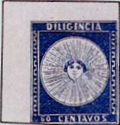
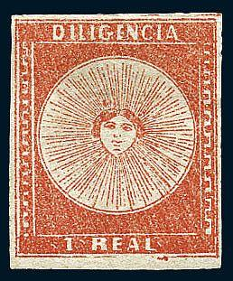
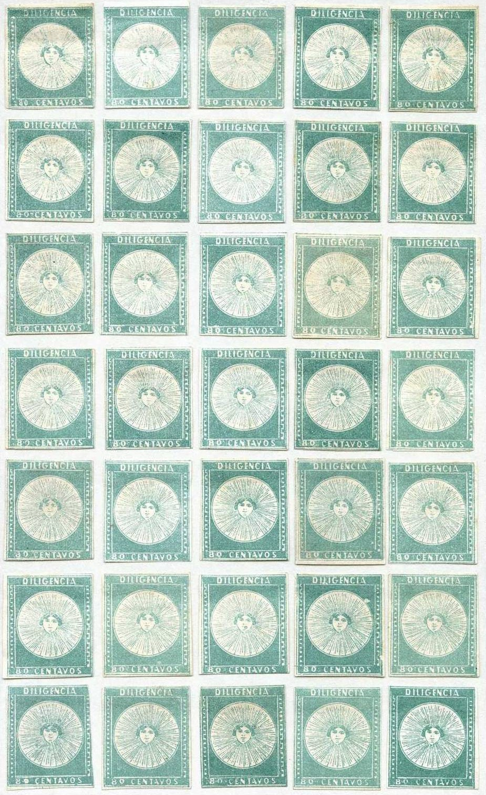

Return To Catalogue - Uruguay 1856 forgeries - 1858 'Sun' issue - 1859 'Sun' issue - 1859-60 'Sun' issue, forgeries by Fournier - 1859-60 'Sun' issue, forgeries by Sperati - 1864-1876 - 1877-1920 - Miscellaneous
Note: on my website many of the
pictures can not be seen! They are of course present in the
catalogue;
contact me if you want to purchase it.





Stamps certified genuine by Rocha.
60 c blue 80 c green 1 real red
The word 'DILIGENCIA' refers to the coaches used to transport mail in those days.
For the specialist: the 80 c values were made from the 35 stones of the 60 c by removing the '60', this gives rise to 35 different minor varieties of the 80 c (there is usually some trace of the value being re-inserted). The 1 real stamp was also made in this way, except that the whole bottom label was removed and replaced by the 1 real text, this also gives rise to 35 minor varieties. A very rare second printing of the 60 c (larger letters and less rays around the sun, 67 instead of 105, see next image) exists, but it is very rare (only 40 stamps known off cover). These stamps were issued for inland use.


Value of the stamps |
|||
vc = very common c = common * = not so common ** = uncommon |
*** = very uncommon R = rare RR = very rare RRR = extremely rare |
||
| Value | Unused | Used | Remarks |
| 60 c | RRR | RRR | First printing, 105 rays |
| 60 c | RRR | RRR | Second printing, 67 rays |
| 80 c | RR | RR | |
| 1 R | RR | RR | |
The 35 types of each value:



Type 2 on letter, from the Ex-Ferrari collection.
All(?) genuinely used stamps bear pencancels. Any stamps with cancels other than pencancels are most likely forgeries. Only a few extremely rare genuine stamps were accidentally cancelled with a 'normal' cancelling device during the first days of usage.

Commemorative sheet issued in 1931 with four 8 Centesimos stamps
in a similar design inscription 'REPUBLICA ORIENTAL DEL URUGUAY
EXPOSICION FILATELICA DEL CENTENARIO 11-15 DE ABRIL DE 1931
MONTEVIDEO'
Four other stamps of this 1931 Philatelic Exhibition; 2
Centesimos blue, 8 Centesimos red, 15 Centesimos blue and 5
Centesimos green.

A non-issued stamp in the 'sun-design', prepared in 1858, since
the text 'DILIGENCIA' was not appropriate (it was supposed to
have been used on the diligencia to Argentina, but this was not
possible since the mail was going by sea). These stamps were
later re-issued with the text 'MONTEVIDEO' and 'CORREO' at both
sides. A 240 c red was also prepared in the same design.
For Uruguay 1858 'Sun' issue, click here.
Literature:
'Estudio de las Falsificaciones de los Sellos Postales del
Uruguay' Robert Hoffmann 1948, 115 pages. Can be downloaded from
http://www.clubfilatelicodeluruguay.com/FalsosUy.html.
{kind=link}